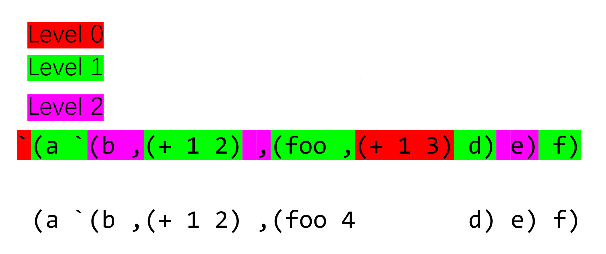

关于 backquote 理解的一个汇总与总结
Table of Contents
我于今年的 2 月 22 日开始在 emacs-china 上写这篇文章1，并在 3 月 14 日完成。不幸地是，2022年 6 月 20 日 emacs-china 因为一些原因暂时闭站了，随后在今天（也就是 26 日）重新恢复。（顺带一提，adnmb 在 20 日重新以 nmbxd 浮起来了）。
将近一周的时间没有 emacs-china 可逛让我感觉浑身难受，不过这同时也提醒我自己写的东西要保存好，只有在自己硬盘里面的东西才真正是自己的，本文完成后我没有保存源文档，我还有点担心它会随着闭站直接消失掉（笑）。adnmb 中的许多精华帖子在新岛中也找不到了，听说之后会逐步恢复。看来要想留下点自己记得住的东西还得自己动手，唉。好了，闲话少说，以下是正文部分。
今天读了读 emacs 中 generalized variable 的实现方法，gv.el 的代码中用到一些了宏生成宏的技巧，我想着要不要做个关于嵌套 backquote 的总结。
本文使用的代码环境如下：
- emacs 27.2 x86_64 on windows
- ecl 21.2
- sbcl 2.0.0
- racket 8.2
本文中会使用两种 common lisp 实现，它们分别是 embedded common lisp 和 steel bank common lisp。在需要对不同实现做区分时我会在代码块中以注释说明使用的是哪一种。
1. 什么是 backquote
首先我们从认识什么是 ` 开始。在不同的 Lisp 中它不一定是同一个东西。
在 elisp 中它是 backquote 宏的别名，它的实现位于 backquote.el 中。
(macrop (symbol-function '\`)) => t (eq (symbol-function '\`) (symbol-function 'backquote)) => t
在 Scheme 中它是 quasiquote 的缩写，它是一个 special form ：racket quasiquoting。
在 CL 中它是个 macro character （宏字符），与之关联的 reader macro （读取宏）在读到类似 `(a1 a2 ...) 的表达式时 CL 会将其转换为类似 (backquote (a1 a2 ...)) 的形式。
下面是我在 ECL 中得到的结果：
;;ECL CL-USER> (read) `(+ 1 2) (SI:QUASIQUOTE (+ 1 2)) CL-USER> (read) `(+ 1 `(+ 2 ,(+ ,(+ 1 2) 4))) (SI:QUASIQUOTE (+ 1 (SI:QUASIQUOTE (+ 2 (SI:UNQUOTE (+ (SI:UNQUOTE (+ 1 2)) 4)))))) CL-USER> (read) `(+ ,@(list 2 3)) (SI:QUASIQUOTE (+ (SI:UNQUOTE-SPLICE (LIST 2 3)))) CL-USER> '`(+ ,.(list 2 3)) (SI:QUASIQUOTE (+ (SI:UNQUOTE-NSPLICE (LIST 2 3)))) CL-USER> (symbol-function 'si:quasiquote) (SI:MACRO . #<compiled-function SI:QUASIQUOTE 0x244bd00>)
在 SBCL 中 ` 读取后输出的还是它本身，无法直接看到 backquote 宏的名字，需要将 print-pretty 设置为 nil 才行 Quasiquote and Comma symbols。
;;SBCL ;; prompt is `\*' \* (read) `(+ 1 ,2) `(+ 1 ,2) \* (read) `(+ 1 `(+ 2 ,(+ ,(+ 1 2) 4))) `(+ 1 `(+ 2 ,(+ ,(+ 1 2) 4))) \* (setq *print-pretty* nil) \* '`(+ 1 ,(+ 2 3) ,@(list 4 5)) (SB-INT:QUASIQUOTE (+ 1 #S(SB-IMPL::COMMA :EXPR (+ 2 3) :KIND 0) #S(SB-IMPL::COMMA :EXPR (LIST 4 5) :KIND 2))) \* '`(+ 1 ,.(list 2 3)) (SB-INT:QUASIQUOTE (+ 1 #S(SB-IMPL::COMMA :EXPR (LIST 2 3) :KIND 1)))
不同的 CL 实现中 backquote 的名字不一致， ECL 中 backquote unquote 和 unquote-splicing 分别对应 SI:QUASIQUOTE ， SI:UNQUOTE 和 SI:UNQUOTE-SPLICE 。而 SBCL 中分别是 SB-INT:QUASIQUOTE ， #S(SB-IMPL:COMMA :EXPR expr :KIND 0) 和 #S(SB-IMPL:COMMA :EXPR expr :KIND 2) 。
总之，在 CL 中， ` 表达式会被内部的 backquote 宏处理得到我们想要的结果，至于内部实现其实并不需要怎么关心。
2. CL 标准中对于 backquote 的描述
这一节主要是介绍一下 X3J13 在 2.4.6 节中的内容。我们可在 HyperSpec 浏览该文档。
根据文档上的说法， backquote 引入了一种用于构建数据结构的模板。使用它可以比较轻松地得到想要的内容，而不必使用各种构造函数。下面的两个表达式可看作等价的（从求值结果上来说），可把后者看作前者的宏展开结果。
`(cond ((numberp ,x) ,@y) (t (print ,x) ,@y))
(list 'cond (cons (list 'numberp x) y)
(list* 't (list 'print x) y))
backquote 和 quote 的区别在于前者允许它接受的表达式被部分求值。通过在 ` 作用范围内使用 , ,@ 或 ,. 可将紧随的表达式的值插入对应位置。下面是一些简单的例子：
;;SBCL \* `(1 2) (1 2) \* `(1 ,(+ 2 3)) (1 5) \* `(1 ,@(list 2 3)) (1 2 3) \* `(1 ,.(list 2 3)) (1 2 3)
, 表示求值并插入值， ,@ 表示求值并将结果“脱皮”（spliced）后再插入。 ,. 和 ,@ 基本一致，不过它允许对由它得到的表结构进行带副作用的操作。下文中我基本上不会用到 ,. ，等找到了合适的例子看能不能说一下。
下面就是对 backquote 展开规则的介绍了，这里基本上算是把文档翻译了一遍：
对于非表非向量的表达式
basic，`basic和'basic一样(equal `a 'a) => t
对于不以
@或.开头的表达式form1，`,form1就是from1`,(+ 1 2) => 3
`,@form1的值是未定义的;;ecl ,@ or ,. has appeared in an illegal position. ;;sbcl `,@(LIST 1 2 3) is not a well-formed backquote expression
`(x1 x2 x3 ... xn . atom)可展开为(append [ x1] [ x2] [ x3] ... [ xn] (quote atom))`(x1 x2 x3 ... xn)可展开为(append [ x1] [ x2] [ x3] ... [ xn] nil)`(x1 x2 x3 ... . ,from)可展开为(append [ x1] [ x2] [ x3] ... [ xn] form)`(x1 x2 x3 ... xn . ,@form)具有未定义结果`#(x1 x2 x3 ... xn)可展开为(apply #'vector `(x1 x2 x3 ... xn))
列表形式的 backquote 展开的关键在于对 [ xi] 的处理。
- ① 若
xi是form1形式，那么[ xi]是(list `form1)， 它还需要进一步的展开 - ② 若
xi是,form1形式，那么[ xi]是(list form1) - ③ 若
xi是,@form1形式，那么[ xi]就是form1
上面的规则解释只是文档中列出的一种，文档也说明了 CL 实现可以自由选择展开方法，只需要保证展开结果与文档标准的求值结果是 equal 的即可。下文中我可能有时会使用 list 或 list* 来替代 append ，让表达式看起来更加简单。
下面我们用一些简单的例子来观察一下一次展开得到的结果，这里使用 ECL
;;ECL CL-USER> (macroexpand '`(1 ,(+ 2 3))) (LIST 1 (+ 2 3)) CL-USER> (macroexpand '`(1 ,@(list* 1 2 3 '(4)) 5)) (LIST* 1 (APPEND (LIST* 1 2 3 '(4)) '(5)))
关于 backquote 的嵌套，文档中简单提了句：
If the backquote syntax is nested, the innermost backquoted form should be expanded first. This means that if several commas occur in a row, the leftmost one belongs to the innermost backquote.
简单来说就是，如果存在嵌套的 backquote ， 那么最内层的 backquote 应该首先得到展开。 如果多个 , 同时出现，那么最左边的就是最内层的。
理解了这句话就理解了嵌套 backquote 的求值方式。不过这一节内容已经够多了，关于它的解释我们留到下一节。下面的内容主要就是围绕规则 ① 和嵌套 backquote 来展开，我可能先从 Scheme（或者 racket）开始讲起，感觉它的更好理解一点。
在本节的最后留个例子当作下一节的引子吧。
CL-USER> (macroexpand '`(apply #'+ 1 ,2 `(3 4 ,(+ 5 6) ,,(+ 7 9)))) (LIST 'APPLY '#'+ 1 2 (LIST 'LIST 3 4 '(+ 5 6) (+ 7 9)))
3. 怎么理解嵌套的 backquote
接下来就是本文最重要的部分了，即对于嵌套 backquote 的理解。由于 Scheme/Racket 中的 quasiquote 更好理解，所以我们先从它开始，这里参考的是 r6rs。关于简单的 backquote/unquote 上面已经举了一些例子了，这里就不说了，下面是 r6rs 关于嵌套 quasiquote 的解释：
Quasiquote forms may be nested. Substitutions are made only for unquoted components appearing at the same nesting level as the outermost quasiquote. The nesting level by one inside each successive quasiquotation, and decreases by one inside each unquotation.
这段话的意思是，对于嵌套的 backquote ，只有和最外层 quasiquote 同层次的 unquote 才会被求值，嵌套层次随 quasiquote 的出现递增，随 unquote 或 unquote-splicing 的出现递减。
r6rs 上给出了求值例子：
`(a `(b ,(+ 1 2) ,(foo ,(+ 1 3) d) e) f) => (a `(b ,(+ 1 2) ,(foo 4 d) e) f)
我们可通过高亮来强调层次。这里为了方便直接用 ppt 绘图：
|  |
可见，只有层次为 0 的 unquote 被求值了，它的值被放入的结果表达式中。这其实也就是我在话题开头引用的那个帖子中提到的规则：
- 嵌套的
quasiquote一次只展开一层 - 只替换和最外层同一层次的
unquote - 每出现一个
`则层次加一，出现,或,@则层次减一
这个规则非常简单易懂，但是 X3J13 中关于嵌套宏的描述就不是那么明了了。我们复述一下上个帖子中的内容：
- 若存在
backquote嵌套，那么最里面的backquote先展开 - 最靠左的
comma（也就是一系列unquote）属于最里层的backquote
该规则的第二条和 r6rs 中的第三条是一个意思，关键在于“最里面的 backquote 先展开”这一规则该如何理解，它和 Scheme 规则有什么关联呢。
在具体开始之前，我们先回顾一下规则 ①：
- 若 xi 是 form1 形式，那么 [ xi] 是 (list `form1) ，它还需要进一步的展开
也就是说， backquote 接受的表中的非 , ,@ 形式的元素会进行递归式的 backquote 展开。举例来说的话：
;;SBCL CL-USER> (macroexpand '`(((,a)))) (LIST (LIST (LIST A))) (setq a 1) CL-USER> `(((,a))) (((1))) CL-USER> (macroexpand '`(1 (,(+ 2 3)) ((4 5)))) (LIST* 1 (LIST (+ 2 3)) (QUOTE (((4 5))))) CL-USER> `(1 (,(+ 2 3)) ((4 5))) (1 (5) ((4 5)))
CL 实现或多或少采用了自己的方法实现 backquote ，在展开过程中可能简化了一些表达式，所以上面得到的展开结果和标准中的不一致。拿上面的 `(((,a))) 来举例，我们用上一节描述的标准规则进行展开。
(macroexpand '`(((,a)))) => (append (list `((,a))) nil) => (append (list (append (list `(,a)) nil)) nil) => (append (list (append (list (append (list a) nil)) nil)) nil) (setq a 'a) `(((,a))) => (((a)))
根据嵌套 backquote 先展开内部的原则，我们使用下面的例子尝试一下：
``(b ,c) => `(append (list 'b) (list c) nil) => (append (list `append) (list `(list 'b)) (list `(list c)) (list `nil)) => (append (list 'append) (list (append (list `list) (list `'b) nil)) (list (append (list 'list) (list `c) nil)) (list 'nil) nil) (append (list 'append) (list (append (list `list) (list `'b) nil)) (list (append (list 'list) (list `c) nil)) (list 'nil) nil) => (append (list 'b) (list c) nil) (setq b 1 c 2) (append (list 'b) (list c) nil) => (b 2)
所谓的最内层最先展开就是这样做的，最内层最先展开也就意味着最外层最先求值。这个规则的另一种描述就是 Scheme 规则的第一条和第二条，使用 Scheme 规则显然更利于理解。对 ``(b ,c) 的第一次求值得到 `(b ,c) ，对结果再求值就可得 (b 2) 了。
这里附上一种 backquote 的实现方法：Appendix C. Backquote2
关于嵌套 backquote 的原理基本上就讲的差不多了，接下来的内容主要介绍一些嵌套 unquote 的用法。这里先用个例子做引子吧：
;;SBCL (setq a '((list 1 2) (list 3 4))) (setq *print-pretty* t) CL-USER> ``(,@,@a) `(,@(LIST 1 2) ,@(LIST 3 4)) CL-USER> `(,@(LIST 1 2) ,@(LIST 3 4)) (1 2 3 4)
4. 几种常见的嵌套 backquote 组合
要拿排列组合来说的话， , 和 ,@ 的两两组合只有四种，再加上中间可能出现的 ' ，那也就只有八种而已。更多的嵌套只不过是从这几种继续堆叠。所以弄清楚了二重嵌套就差不多弄清了其他更复杂的嵌套。
4.1. ① ,,
这应该是最容易想到的嵌套方法，两个 , 表示每消掉一层 ` 都对 , 作用的表达式求值一次，就像这样：
``(,,(list '+ 1 2)) => `(,(+ 1 2)) => (3)
我对 emacs27 的 elisp 源文件使用了 git grep ,, 搜索，这种用法在宏中好像不多，我好像只在 ert.el 和 radix-tree.el 中看到了这种用法。有兴趣的同学可以去看看。
4.2. ② ,',
这种用法表示展开外层 ` 时对内层求值，在展开内层 ` 时对上一次求值结果的 quote 形式求值，从而相当于只在外层展开时求值。
``(,',(list '+ 1 2)) => `(,'(+ 1 2)) => ((+ 1 2))
这种用法可以在 gv.el 中找到，这里我举个简单的例子，假设我们需要定义得到对符号加减乘除的表达式的宏
(defmacro madd (sm num) `(setq ,sm (+ ,sm ,num)))
假设我们想要创建一个创建这种宏的宏，我们可以让宏的名字和操作符作为生成宏的参数：
(defmacro m-op (name op) `(defmacro ,name (sm arg) `(setq ,sm (,',op ,sm ,arg)))) (macroexpand '(m-op abc +)) => (defalias 'abc (cons 'macro #'(lambda (sm arg) `(setq ,sm (,'+ ,sm ,arg))))) (setq a 2) (abc a 2) => 4
4.3. ③ ,@, 和 ,@',
这种用法表示先求值后展平，就像这样：
``(,@,(list 'list 1 2 3)) => `(,@(list 1 2 3)) => (1 2 3)
至于 ,@', ，它和上面的 ,', 类似，也相当于只在外层 ` 展开时进行一次求值
``(,@',(list 'list 1 2 3)) => `(,@'(list 1 2 3)) => (list 1 2 3)
这种用法我在 emacs 代码中貌似搜索不到……
上一节的最后我举了一个使用 ,@,@ 嵌套的例子，它在 elisp 里面是行不通的：
(setq a '((list 1 2) (list 3 4)))
``(,@,@a)
=> `((\,@ (list 1 2) (list 3 4)))
可见外层的 ,@ 并未作用到内层展开得到的所有项上，这与 emacs 中的实现有关。
4.4. ④ ,,@ 和 ,',@
,,@ 表示先展平，后对展平的 各项 求值：
;;SBCL \* ``(,,@(list '(+ 1 2) '(+ 2 3))) `(,(+ 1 2) ,(+ 2 3)) \* `(,(+ 1 2) ,(+ 2 3)) (3 5)
,',@ 类似于上面 ③ 中加 ' 的情况，但要注意 ,@ 得到的结果只能有一项，否则就会出错：
;;SBCL \* ``(,',@(list '(+ 1 2))) `(,'(+ 1 2)) \* `(,'(+ 1 2)) ((+ 1 2)) \* ``(,',@(list '(+ 1 2) '(+ 2 3))) `(,(QUOTE (+ 1 2) (+ 2 3))) \* `(,(QUOTE (+ 1 2) (+ 2 3))) debugger invoked on a SIMPLE-ERROR in thread #<THREAD "main thread" RUNNING {10010B0523}>: wrong number of args to QUOTE: (QUOTE (+ 1 2) (+ 2 3))
4.5. ⑤ ,@,@ 和 ,@',@
,@,@ 表示进行二次展平， ,@',@ 和 ,',@ 类似，后一 ,@ 展开得到的结果只能有一项：
;;SBCL \* ``(,@,@(list '(list 1 2) '(list 3 4))) `(,@(LIST 1 2) ,@(LIST 3 4)) \* `(,@(LIST 1 2) ,@(LIST 3 4)) (1 2 3 4) \* ``(,@',@(list '(list 1 2))) `(,@'(LIST 1 2)) \* `(,@'(LIST 1 2)) (LIST 1 2)
对于 ④ 和 ⑤ ，elisp 中都无法得到令人满意的结果，这是由于 elisp 的 backquote 不符合 CL 标准而导致的，在上上节的链接2中，作者这样说到：
the rules given here work, but some Common Lisp implementations have run into trouble at one time or another by using a simplification rule that does not work in all cases.
;;elisp ``(,,@(list '(+ 1 2) '(+ 3 4))) => `((\, (+ 1 2) (+ 3 4))) => error "Multiple args to , are not supported" ``(,,@(list '(+ 1 2))) => `(,(+ 1 2)) => (3) ``(,@,@(list '(list 1 2) '(list 3 4))) => `((\,@ (list 1 2) (list 3 4))) => error ``(,@,@(list '(list 1 2))) => `(,@(list 1 2)) => (1 2)
按照 CL 标准，上面的各表达式展开结果应该是这样的（方便起见，这里就只展开最里层说明一下）
``(,,@(list '(+ 1 2) '(+ 3 4))) `(append (list ,@(list '(+ 1 2) '(+ 3 4))) nil) (eval it) => (append (list (+ 1 2) (+ 3 4)) nil) (eval it) => (3 7) ``(,@,@(list '(list 1 2) '(list 3 4))) `(append ,@(list '(list 1 2) '(list 3 4)) nil) (eval it) => (append (list 1 2) (list 3 4) nil) (eval it) => (1 2 3 4)
4.6. CL 中 backquote 的一个极简实现
本节剩下的内容是对 CL 实现的一个简单分析，此处的实现参考了2，出于简单考虑，我没有对展开时进行化简，且没有实现 ,.
;; ec$ 即 backuqote ;; ec% 即 unquote ;; ec%@ 即 unquote-splicing (defmacro ec$ (x) "the backquote macro ec means emacs-china, bk means backquote" (ec-bk-process x)) (defun ec-bk-process (x) (cond ((atom x) ;;原子类型直接用 quote (list 'quote x)) ((eq (car x) 'ec$) ;;嵌套 ` 处理，即递归处理，先从最里层开始 (ec-bk-process (ec-bk-process (cadr x)))) ((eq (car x) 'ec%) ;;逗号处理，即 ,expr (cadr x)) ;; (unquote expr) ((eq (car x) 'ec%@) ;;`的后面不应直接出现 ,@ (error ",@~S after `" (cadr x))) (t ;; 处理 `(a1 a2 ... an) 的情况 (do ;;使用 ec-bracket 处理表中的每一项 ((p x (cdr p)) (q '() (cons (ec-bracket (car p)) q))) ((atom p) ;;结束条件 (cons 'append (nreconc q (list (list 'quote p))))) ;;中途检查 (when (eq (car p) 'ec%) ;; 遇到了落单的 `,' ;;它只能以 `(e1 e2 ... . ,e-last) 的形式出现 ;;一般情况下，待处理表的形式是 ((unquote ...) ...)，取其 car 得到的是表而不是符号 (unless (null (cddr p)) (error "Malformed ,~S" p)) (return (cons 'append (nreconc q (list (cadr p)))))) (when (eq (car p) 'ec%@) ;;遇到了落单的 ,@ 。它不可能单独出现 (error "dotted ,@~S" p)))))) (defun ec-bracket (x) (cond ((atom x) ;; 给原子加上 quote (list 'list (ec-bk-process x))) ((eq (car x) 'ec%) ;; 对 (unquote expr) 的处理 (list 'list (cadr x))) ((eq (car x) 'ec%@) ;; 对 (unquote-splicing expr) 的处理 (cadr x)) (t ;; 其他情况，也就是规则中的“进一步处理” (list 'list (ec-bk-process x)))))
我们可以用上面的例子来检验一下正确性，由于没有用 read-macro，所以写起来有点麻烦：
(ec$ (1 (ec% (+ 2 3)))) (1 5) (ec$ ((ec%@ (list 1 2 3)))) (1 2 3) (ec$ (ec$ ((ec% (ec% (list '+ 1 2)))))) (APPEND (LIST (+ 1 2)) 'NIL) (3) (ec$ (ec$ ((ec% (quote (ec% (list '+ 1 2))))))) (APPEND (LIST '(+ 1 2)) 'NIL) ((+ 1 2)) (ec$ (ec$ ((ec%@ (ec% (list 'list 1 2 3)))))) (APPEND (LIST 1 2 3) 'NIL) (1 2 3) (ec$ (ec$ ((ec%@ (quote (ec% (list 'list 1 2 3))))))) (APPEND '(LIST 1 2 3) 'NIL) (LIST 1 2 3) (ec$ (ec$ ((ec% (ec%@ (list '(+ 1 2) '(+ 2 3))))))) (APPEND (LIST (+ 1 2) (+ 2 3)) 'NIL) (3 5) (ec$ (ec$ ((ec% (quote (ec%@ (list '(+ 1 2)))))))) (APPEND (LIST '(+ 1 2)) 'NIL) ((+ 1 2)) (ec$ (ec$ ((ec%@ (ec%@ (list '(list 1 2) '(list 2 3))))))) (APPEND (LIST 1 2) (LIST 2 3) 'NIL) (1 2 2 3) (ec$ (ec$ ((ec%@ (ec%@ (list '(list 1 2))))))) (APPEND (LIST 1 2) 'NIL) (1 2)
本想着也简化一下 elisp 中的实现贴过来的，不过这一节的内容已经够多了，关于 elisp 我们留到下一节吧。
5. elisp 中的 backquote 实现
elisp 实现的就是类 Scheme 标准的 backquote ，它不能像 CL 一样处理形如 ,,@ ， ,@,@ 的嵌套 unquote 。考虑到 emacs lisp 主要继承于 maclisp，它的 backquote 与 CL 不一致挺正常的。但至于这种 backquote 是否来自 maclisp 我就没有精力进一步考古了。
GNU Emacs Lisp is largely inspired by Maclisp, and a little by Common Lisp. If you know Common Lisp, you will notice many similarities. However, many features of Common Lisp have been omitted or simplified in order to reduce the memory requirements of GNU Emacs.
https://www.gnu.org/software/emacs/manual/html_node/elisp/Lisp-History.html
在正式开始之前，我们来重新看看 Scheme 和 CL 的两种不同的 backquote 规则：
Scheme
- 嵌套的
quasiquote一次只展开一层 - 只替换和最外层同一层次的
unquote - 每出现一个
`则层次加一，出现,或,@则层次减一
CL
- 若存在
backquote嵌套，那么最里面的backquote先展开 - 最靠左的
comma（也就是一系列unquote）属于最里层的backquote
可见，CL 强调的是内部先于外部展开，而 Scheme 强调的是同层次展开。这两者并不是等价的，Scheme 规则无法像 CL 一样处理类 ,,@ 嵌套。在 Racket 中我们可以看看 Scheme 的行为，它和 elisp 是一致的：
> ``(,,@(list 1 2)) '`((unquote 1 2)) > `((unquote 1 2)) ; stdin:2:2: unquote: expects exactly one expression ; at: (unquote 1 2) ; in: (quasiquote ((unquote 1 2))) ; [,bt for context]
扯了这么多废话，现在我们来具体分析一下 elisp 中的实现吧。
elisp 实现与 CL 不同，它在递归过程中会记录当前所在层数，当遇到 , 或 ,@ 时会根据当前层数判断表达式是否被求值。在处理过程中它会对表达式进行分类，它将常量用 0 标识，将非常量用 1 标识，将需要展平的表达式用 2 标识。emacs 实现会对常量表达式进行优化，不考虑优化的话可以简化它的代码。
老实说，emacs 中的实现挺难读的，我感觉我不太会讲，下面我贴一下化简后的代码，希望其中的注释对你有所帮助：
(defmacro ec$ (s) (cdr (bk-process s))) (defun bk-listify (list tail) (let ((heads nil) (list-tail list) (item nil)) ;; while 循环给 list 中的带标识表达式去标识 (while (consp list-tail) (setq item (car list-tail)) (setq list-tail (cdr list-tail)) ;; 将 list 中的内容放入 heads 中 (setq heads (cons (cdr item) heads))) (cons 'cl-list* (append heads (list (cdr tail)))))) (defun bk-delay-process (s level) ;; 将头元素拿出来，对表剩余部分进行处理 (let ((exp (bk-listify (list (cons 0 (list 'quote (car s)))) (bk-process (cdr s) level)))) (cons 0 exp))) (defun bk-process (s &optional level) (unless level (setq level 0)) (cond ((atom s) ;;原子的处理 (cons 0 (if (or (null s) (eq t s)) s (list 'quote s)))) ((eq (car s) 'ec%) ;; unquote 的处理 (if (<= level 0) ;; 与最外层处于同一层级 (cond ((> (length s) 2) ;; (unquote expr) 长度为 2，unquote 只能接受一个参数 (error "Multiple args to , are not supported: %S" s)) (t (cons 1 (nth 1 s)))) (bk-delay-process s (1- level)))) ((eq (car s) 'ec%@) ;; unquote-splicing 的处理 (if (<= level 0) (if (> (length s) 2) (error "Multiple args to ,@ are not supported: %S" s) (cons 2 (nth 1 s))) (bk-delay-process s (1- level)))) ((eq (car s) 'ec$) ;; 多了一层 backquote (bk-delay-process s (1+ level))) (t ;;剩余处理 `(a1 a2 ... an) (let ((rest s) ;; 表中剩下的元素 item ;;每次迭代的元素 firstlist ;;存储在遇到 `,@' 前的表达式 list ;; 暂存处理结果 lists ;; 存储结果 expression ;;存储最终结果表达式 ) ;;在循环结束后， firstlist 中存储前部分非 `,@' 表达式， lists 中存储展平表达式，list 中存储后部分非 `,@' 表达式 (while (and (consp rest) (not (or (eq (car rest) 'ec%) (eq (car rest) 'ec%@)))) (setq item (bk-process (car rest) level)) ;; 获取当前元素 (cond ((= (car item) 2) ;; car 为 2 说明需要展平 (if (null lists) ;; 首次遇到 `,@' 表达式 (setq firstlist list ;; 将一些 `,' 表达式放入 firstlist 中 list nil)) ;; 清空 list (if list ;; 若 list 非空，将其中的项处理后放入 lists 中 ;;这一步挺妙的, list 是多个项组成的表，到时候和 `,@' 项一起展平 (push (bk-listify list '(0 . nil)) lists)) (push (cdr item) lists) ;; 将 splicing 表达式的序号去掉后，放入 lists 中 (setq list nil)) (t ;; 非展平表达式，无需处理 (setq list (cons item list)))) ;;结果存储到 list 中 (setq rest (cdr rest))) ;;将 list 中的剩余项放入 lists 中去 (if (or rest list) (push (bk-listify list (bk-process rest level)) lists)) ;; 若只有一项则取首元素 (setq expression (if (or (cdr lists) (eq (car-safe (car lists)) 'ec%@)) (cons 'append (nreverse lists)) (car lists))) ;;将 firstlist 中的项处理后放入 expression 中 (if firstlist (setq expression (bk-listify firstlist (cons 0 expression)))) (cons 0 expression)))))
总之，它没有像 CL 一样从里到外展开，这也就是展开行为与 CL 不一致的原因。
这一节主要就是点代码，到了这里本文也就基本结束了。
6. 尾声
我们以 once-only 这个有名的宏来作为本文的终结吧。看完了上面的内容，相信你一定能看懂这段代码了 :grin:
;;CL (defmacro once-only (names &rest body) (let ((gensyms (loop repeat (length names) collect (gensym)))) `(let (,@(loop for g in gensyms collect `(,g (gensym)))) `(let (,,@(loop for g in gensyms for n in names collect ``(,,g ,,n))) ,(let (,@(loop for n in names for g in gensyms collect `(,n ,g))) ,@body)))))
下面是 elisp 实现：
;;elisp (defmacro with-gensyms (symbols &rest body) "Execute BODY in a context where the variables in SYMBOLS are bound to fresh gensyms." (cl-assert (cl-every #'symbolp symbols)) `(let ,(cl-mapcar #'list symbols '#1=((gensym) . #1#)) ,@body)) (defmacro once-only (symbols &rest body) "Execute BODY in a context where the values bound to the variables in SYMBOLS are bound to fresh gensyms, and the variables in SYMBOLS are bound to the corresponding gensym." (declare (indent 1)) (cl-assert (cl-every #'symbolp symbols)) (let ((gensyms (cl-mapcar (lambda (x) (gensym)) symbols))) `(with-gensyms ,gensyms (list 'let (cl-mapcar #'list (list ,@gensyms) (list ,@symbols)) ,(cl-list* 'let (cl-mapcar #'list symbols gensyms) body)))))
最后需要提醒一下的是，不同的 CL 实现中对于 backquote 的处理不一定相同，有些 CL 实现可能与标准并不完全一致：
;;ECL CL-USER> ``(,@,@(list 1 2 3)) ; Evaluation aborted on #<a SIMPLE-ERROR 0x3d28500>. ,@ or ,. has appeared in an illegal position. [Condition of type SIMPLE-ERROR] ;;SBCL \* ``(,@,@(list 1 2 3)) => `(,@1 ,@2 ,@3)